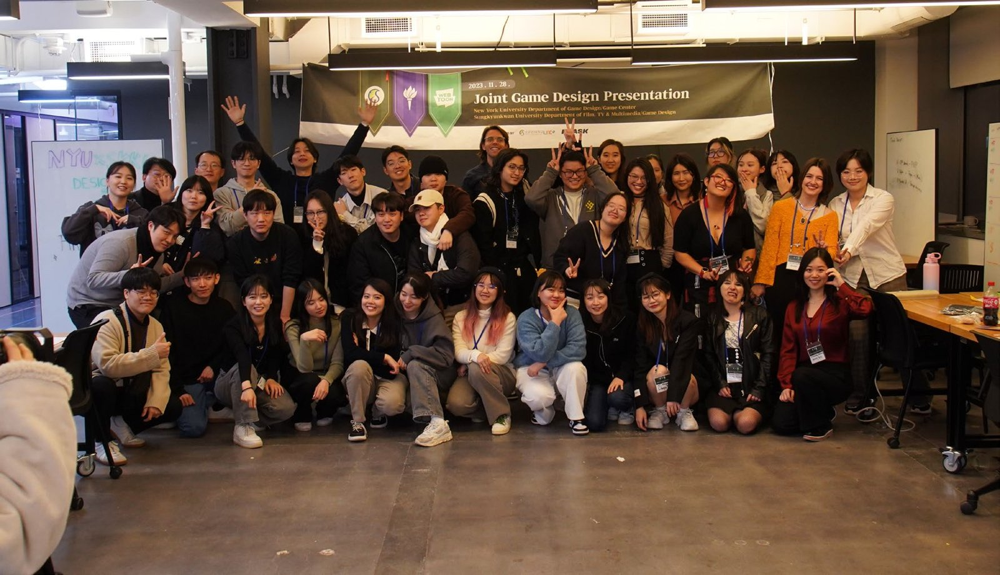

소개
원작의 감정을 찾아,
원작의 감정을 찾아,
규칙과 콘텐츠에 함께 담습니다.
공포 비주얼 노벨, 2D 액션 플랫포머, 퍼즐 SNG, 카페 경영까지
장르는 매번 달랐지만 순서는 같았습니다.
원작에서 재미가 생기는 조건을 찾고,
옮길 것과 포기할 것을 나눈 뒤,
그 감정을 시스템과 콘텐츠에 함께 담습니다.
지스타 부스에서 기획 의도와 플레이어의 경험이 다르다는 것을 배운 뒤로는,
플레이하는 모습을 직접 보고 확인하는 것을 기획의 마지막 단계로 둡니다.

2023.11 뉴욕대 공동 발표이력
- 2025.02~㈜넥스쳐 기획팀 · 『마루는 강쥐』개발·런칭·라이브, 시스템 + 콘텐츠 기획
20개 이상의 콘텐츠와 시스템 설계 - 2025.08성균관대학교 게임디자인학과 석사「게임 IP의 세계관 확장과 장르 변주를 위한 게임 디자인 연구」
- 2024.05~2025.02『화이트데이: 흩어진 조각, 교차하는 운명』메인 기획 + PM, 10인 이상 학생 팀
뉴욕대 교류 발표 · 지스타 출품 - 2024.10CHI PLAY 2024 학생 자원봉사핀란드 탐페레 · 포스터 논문 제2저자
- 2023.03~2025.02성균관대학교 게임센터 · 네이버웹툰 산학협력『순정빌런』 팀장·리드 게임 디자이너
학생 25명을 인솔해 뉴욕에서 두 차례 성과 발표 - 2023ICCC 2023 논문 발표 · 우수 발표상『순정빌런』 결과물을 바탕으로 한 발표
- 2021현대HCN 「스튜디오S」 조연출 겸 작가교육 유튜브 채널, 2021년 공개 영상 107편 제작 참여
누적 조회수 약 630만 회
쓰는 도구
기획Excel, Figma, Notion
데이터BigQuery, SQL, 테이블 설계
AIClaude Code, Codex, Gemini, Midjourney
개발Unity (C#)
바로 열어 보기